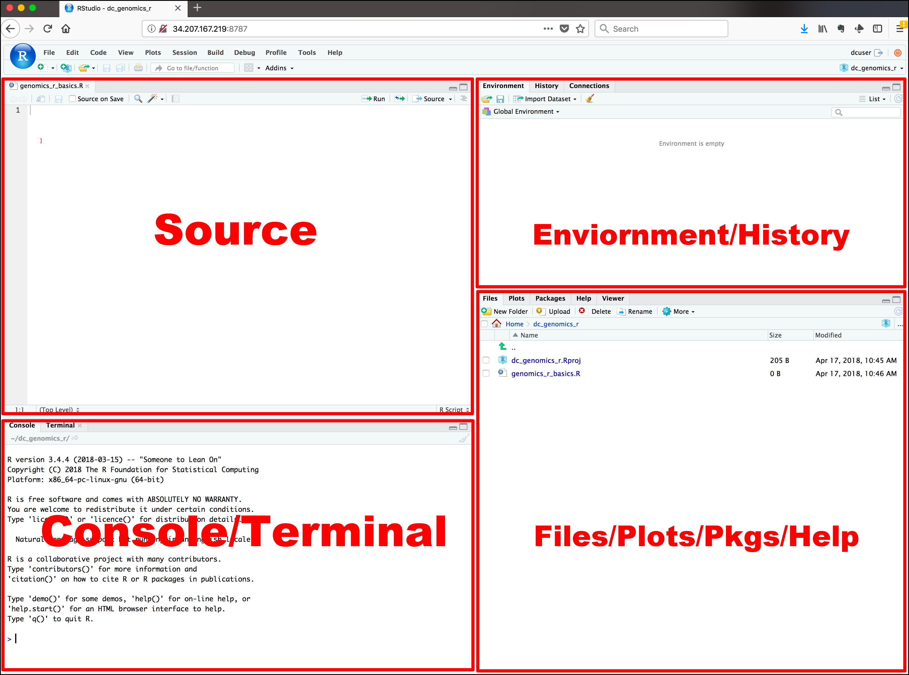

Chapitre 2 Introduction à R et RStudio
2.1 Qu’est-ce que R et Rstudio
R est un langage de programmation dédié à la manipulation, l’analyse statistique et la visualisation de données. Développé au début des années 1990 par Ross Ihaka et Robert Gentleman afin d’enseigner l’introduction aux statistiques, le langage R possède aujourd’hui une impressionnante communauté d’utilisateurs et développeurs qui créent et partagent des milliers de package via le Comprehensive R Archive Network (CRAN).
R est de plus en plus utilisé dans les domaines de la sciences des données massives, notamment pour les raisons suivantes :
- Le logiciel est gratuit et open source.
- Il est multiplateformes (Windows, Mac et Linux).
- Il possède d’excellentes capacités graphiques (idéal pour les figures d’articles scientifiques).
- Il est facile de développer vos propres fonctions (automatisation).
- Il possède une très grande communauté d’utilisateurs et de développeurs (beaucoup de librairies, aide, etc.).
RStudio est, quant à lui, un environnement de développement intégré (Integrated Development Environment, IDE) qui permet de travailler non seulement en R mais aussi en d’autres languages de programmation comme Bash et Python. En programmation informatique, un IDE est un logiciel de création d’applications qui rassemble des outils de développement fréquemment utilisés dans une seule interface utilisateur graphique (Graphical User Interface, GUI). L’interface graphique conviviale de l’IDE facilite l’écriture de scripts et l’usage de R au quotidien.
En d’autre termes, voici “l’histoire évolutive” d’un système de base (console R), vers l’utilisation de script et ultimement le recours à un IDE :
R est un langage de programmation dit interpreté, où l’application R est une console/terminal qui doit recevoir des commandes R, une à la fois. Entrer les commandes directement en console (un peu comme avec une calculatrice) à le désavantage de ne pas être automatisable et de ne pas laisser de trace (peu reproductible).
Le niveau “supérieur” d’utilisation consiste à regrouper une serie prédéterminée de commandes ensemble et de les enregistrer dans un fichier texte. En “donnant” le fichier de texte rempli de commandes R au terminal R, ce dernier les executera une a la fois, de la même façon que si un utilsateur les avait entrées. Un fichier de texte contenant des commandes d’un langage de programmation afin d’être executer s’appelle un script. Ainsi, une façon simpliste de programmer en R consiste à : ouvrir un éditeur de texte quelconque (comme Notepad), rédiger ses lignes de commandes R, enregistrer le tout comme un fichier script et finalement ouvrir un terminal pour appeler l’application R en lui “donnant” le script R. Pour un programmeur, avoir l’endroit où il rédige son code séparer de l’endroit ou il l’exécute devient rapidement fatiguant. La solution consiste à utiliser un environnement de développement intégré (IDE).
Dans sa forme la plus basique, ce dernier consiste en une seule application combinant un éditeur de texte avec un terminal, pour faciliter l’envoie de commandes de l’un vers l’autre. De nos jours, les IDEs possèdent de nombreux autres outils pour aider au developement de code : un débogueur, un explorateur de fichiers, un résumé des variables… Même si certains IDEs sont specialisés pour un langage de programmation (comme R Studio avec R et Spyder avec Python), un IDE est une application séparée et indépendante du langage de programmation et il est possible d’utiliser n’importe lequel; il s’agit après tout d’un simple éditeur de texte. Certains IDEs comme le très populaire gratuit et open-source VSCode ont la prétention de pouvoir être utiliser pour n’importe quel langage.
Parce qu’une image vaut mille mots…

2.2 Composants de RStudio

L’interface RStudio inclut :
- un éditeur de code (Source),
- une console (Console) et terminal (Terminal),
- un gestionnaire de fichier (Files),
- une sortie graphique (Plots),
- le gestionnaire de paquets (Pkgs),
- une aide en ligne (Help),
- le contenu de l’espace de travail (Environment),
- l’historique (History).
Nous n’allons pas entrer dans les détails de chacun des composants mais voici les plus utiles :
Source
L’éditeur de code de RStudio est l’endroit où les scripts sont rédigés. Une variété de fonctionnalités facilitent la rédaction par notamment la mise en évidence d’erreur de syntaxe, l’auto-complétion, la recherche et remplacement de mots, etc. RStudio permet aussi d’exécuter de manière flexible le code R directement depuis l’éditeur de source.
Nous abordons plus en détails la rédaction de scripts dans la section Scripter avec RStudio
Console
Le console est le cheval de bataille de R où le code rédigé est exécuté. Vous pouvez directement écrire votre code dans la console cependant le code qui y est écrit ne sera rédigé dans votre script.
Files
L’onglet files correspondant à l’outils Finder pour les utilisateurs de Mac et File explorer pour Windows. Il permet à l’utilisateur de naviguer à travers les dossiers sur son ordinateur. L’utilisateur peut aussi y créer de nouveaux dossiers et renommer ou supprimer des dossiers et documents. On peut aussi y définir un dossier comme répertoire de travail (Files -> More -> Set As Working Directory).
Environment
Un des concepts de base en programmation est la variable/objet. Une variable vous permet de stocker une valeur (par exemple 4) ou un objet (par exemple un tableau de données ou une fonction) à l’aide de l’opérateur d’assignation <- ou =. Vous pouvez ensuite utiliser le nom de cette variable pour accéder facilement à la valeur ou à l’objet stocké dans cette variable. L’ensemble des objets stockés se retrouve dans l’onglet Environment de RStudio.